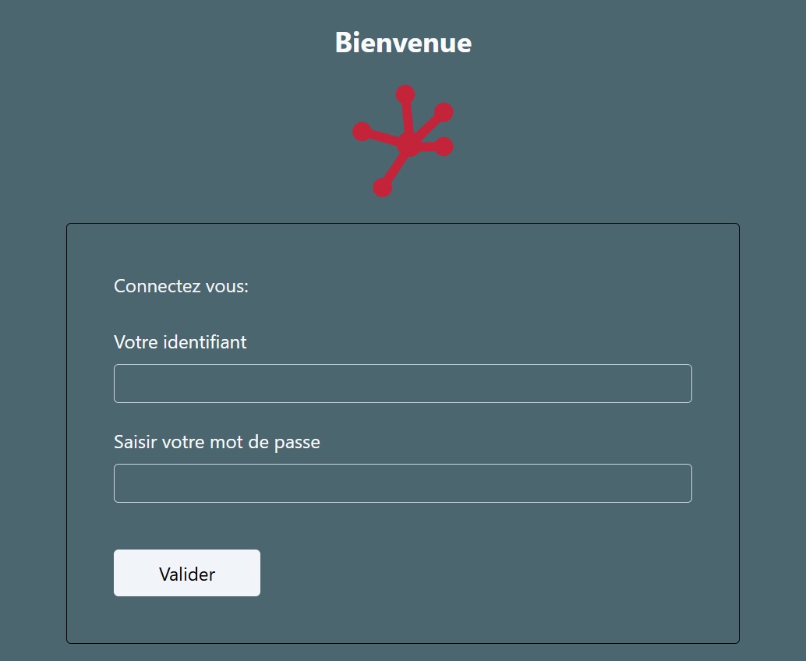
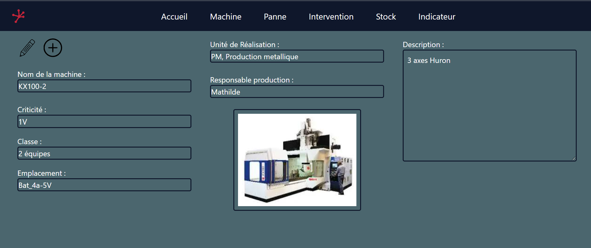
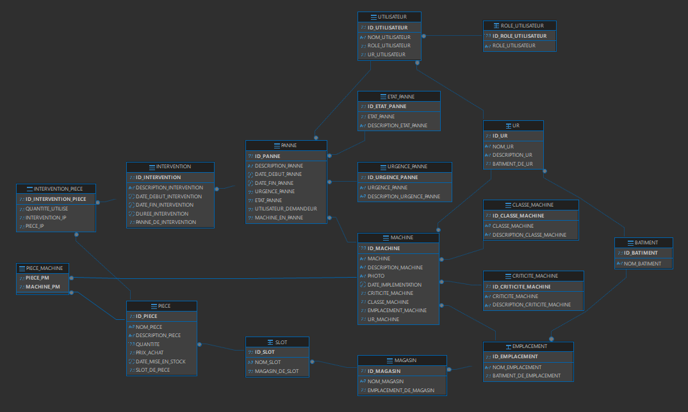

Durant mes trois années en tant qu'apprenti ingénieur maintenance au sein du service maintenance de MBDA Missile Systems, j'ai été amené à utiliser quotidiennement une GMAO (Gestion de Maintenance Assistée par Ordinateur).
Une GMAO est un outil central de planification, d'organisation et de suivi des activités d'un service maintenance. Cette expérience m'a permis de comprendre les enjeux métier liés à ce type de logiciel : gestion des interventions, traçabilité, optimisation des ressources et fiabilité des données.
J'ai également identifié plusieurs limites fonctionnelles et techniques dans l'outil utilisé, ce qui m'a conduit à concevoir et développer ma propre solution de GMAO, pensée pour répondre aux besoins réels des équipes terrain et améliorer l'expérience utilisateur.
Technologies utilisées : Java (Spring Boot), React, MySQL
Features:
- Gestion des machines : visualisation, création et modification des équipements
- Gestion des pannes : suivi, déclaration et mise à jour des incidents
- Gestion des interventions : création et planification d'interventions liées à une panne existante
- Gestion des stocks : consultation, ajout et mise à jour des pièces détachées
- Création d'indicateurs de performance (KPI) : calcul des temps d'arrêt sur plages variables, calcul du temps moyen de réparation (MTTR), mise en forme des données
- Gestion des profils utilisateurs : technicien de maintenance, administrateur GMAO, responsable de production
Ce projet repose principalement sur la mise en œuvre de fonctionnalités CRUD (Create, Read, Update, Delete). Il intègre également une partie plus avancée dédiée au calcul des indicateurs de maintenance, nécessitant la gestion de données temporelles et le traitement d'informations variables.
L'objectif était de développer une application full-stack de bout en bout : conception de la base de données, développement du backend et réalisation de l'interface utilisateur. Ce projet m'a permis de découvrir et d'approfondir le framework Spring Boot côté backend, tout en consolidant mes compétences en développement frontend avec React.
Etat actuel du projet 15/02/2026:
-
Gestion de l'authentification des utilisateurs
 -
Gestion des machines

L'écriture en base de données est réalisée via les fonctionnalités d'ajout et de modification des machines.
-
Base de données structurée, peuplée avec des données initiales et stabilisée.

Reste à faire:
- Gestion pannes, intervention et stock de pièces
- Création et mise en forme des inficateurs
Points d'attention : conception et implémentation des supports de visualisation des indicateurs de performance (diagrammes circulaires, histogrammes, graphiques temporels, ...).
Merci de me contacter à l'adresse suivante : victorcharmes.15@orange.fr